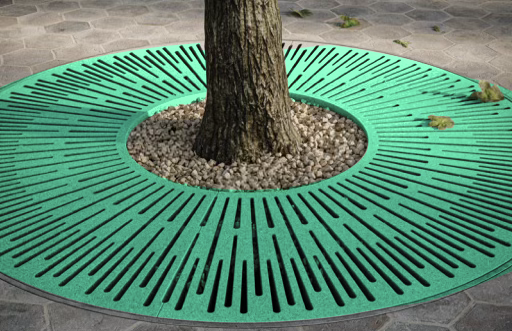
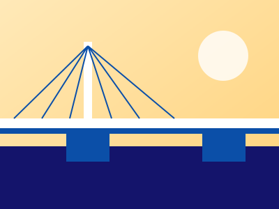
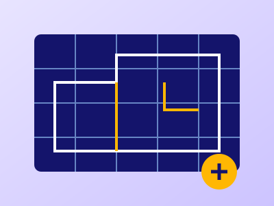

PRECAST PRODUCTS
ECO-UHPC 2차 제품
그레이팅, 맨홀뚜껑, 가로수보호판, 공동구 뚜껑, 보도블록 대체용 보호판은 물론 조형물·발코니 등 건축 요소까지 맞춤 제작합니다.
- 그레이팅 · 측구덮개 · 집수정덮개
- 맨홀뚜껑 · 공동구 뚜껑
- 가로수보호판 · 조형물 · 발코니

LID
ECO-UHPC 비점오염저감시설
도로·도심에서 발생하는 비점오염물질을 저감하는 시설에 UHPC의 내구성과 투수·디자인 장점을 접목합니다.
- 빗물 유입·침투를 고려한 구조
- 가로수보호판 LID 기능 적용
- 장기 내구성으로 유지관리 최소화
MODULAR HOUSE
ECO-UHPC 모듈러 주택
공장에서 프리캐스트 모듈을 제작해 현장에서 조립하는 방식으로 공기를 단축하고 품질을 균일하게 확보합니다. 고정식·이동식 모듈러주택 어셈블리 특허를 보유하고 있습니다.
- 빠른 건축 · 인건비·비용 절감
- 공장 제작으로 일정한 품질
- 맞춤 설계 · 소음·먼지가 적은 친환경 시공

CABLE TROUGH · BRIDGE
케이블 트로프 · 교량
고강도·고연성 UHPC로 케이블 트로프와 교량 구조부재를 제작합니다. 강재 구조부재를 대체할 수 있는 소재입니다.
- 케이블 트로프: 매끄러운 표면, 청결 유지, 맞춤 디자인
- 교량: 압축강도 약 180MPa급
- 치밀한 조직으로 200년 내구성

R&D · CONSULTING
R&D · 컨설팅
설계·PC·콘크리트 전문가 그룹이 신제품 연구개발과 PC 관련 기술 컨설팅을 수행합니다.
- 신소재·신제품 연구개발
- PC(프리캐스트) 공법 컨설팅
- 제작시방서 · 구조계산 지원